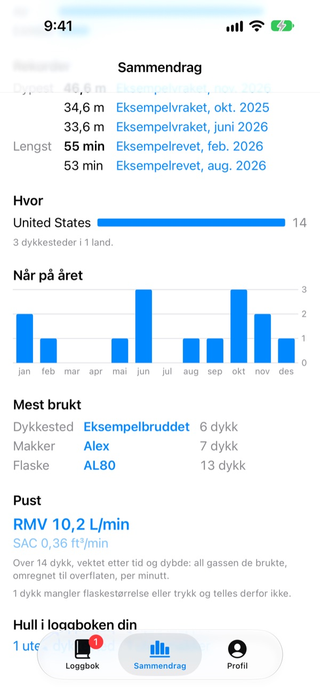

Oppdater alle enhetene først
Mange problemer forsvinner når alle enhetene kjører det nyeste bygget. Åpne TestFlight på hver iPhone, iPad og Mac du bruker, og installer eventuelle oppdateringer. Et eldre bygg slutter å sende endringer til det er oppdatert, og sier Oppdater Thermocline for å fortsette synkroniseringen. Endringene dine beholdes og sendes etter oppdateringen.
Nedlasting fra en dykkecomputer
Computeren blir ikke funnet
- Vekk computeren og sett den i Bluetooth-modus (Shearwater: Menu → Bluetooth). Den blir bare der i omtrent to minutter.
- Hold den nær iPhonen, iPaden eller Macen.
- Shearwater-computere går tilbake til den siste enheten de brukte. Hvis telefonen din eller en annen Mac er i nærheten, slår du av Bluetooth på den enheten og prøver igjen.
- Sjekk at Bluetooth er på, og at Thermocline har lov til å bruke det (iPhone: Innstillinger → Thermocline; Mac: Systeminnstillinger → Personvern og sikkerhet → Bluetooth).
Det er en Predator eller Petrel 1, og iPhonen ser den ikke
Disse bruker eldre Bluetooth (Bluetooth Classic) som iPhone og iPad ikke kan bruke. Last dem ned på Macen (se veiledningen), eller importer dykkene deres fra Shearwater Cloud eller en UDDF-fil.
Den kobler seg til, men ber om en PIN-kode
Skriv inn koden som vises på skjermen til computeren. Den trengs bare første gang.
«Ingen nye dykk»
Bare dykk som er nyere enn forrige nedlasting, hentes. Hvis du har slettet et dykk og vil ha det tilbake, slår du på Last ned alle dykkene på computeren og laster ned igjen. Dykk som allerede er i loggboken din, hoppes over.
Nedlastingen stoppet halvveis
Velg Behold for å lagre dykkene som kom inn, og last ned igjen for resten. Hvis den fortsetter å stoppe, velger du Prøv igjen nær computeren, og sender nedlastingsloggen.
En kabelnedlasting mislykkes på Macen
- Sjekk at porten passer til kabelen: listen sier hvilken type hver port er, og advarer når den ikke er for modellen du valgte.
- Koble kabelen fra og til igjen, og bruk oppdateringsknappen for å lete etter kabler på nytt.
- Følg stegene under Før du begynner for modellen din.
- Kabelnedlasting er nytt. Send nedlastingsloggen uansett.
Synkronisering mellom enheter
iPhone-appen min sier at Thermocline nå er én app, eller jeg ser to Thermocline-apper
Den 18. november 2026 ble appene for iPhone, iPad, Mac og Apple Watch én app, med én beta-lenke. iPhone-appen du hadde før, hjelper deg nå bare med å flytte.
- Åpne den gamle appen. Hvis den sier at synkronisering er av, trykker du på Slå på «Synkroniser med iCloud» og lar den være åpen i et minutt, eller trykker på Eksporter loggboken min som UDDF og lagrer filen.
- Trykk på Bli med i den nye betaen, eller åpne beta-lenken på iPhonen din, og installer den nye appen. Den ligger ved siden av den gamle.
- I den nye appen slår du på Profil → Synkroniser med iCloud. Dykkene, dykkestedene, utstyret og innstillingene dine kommer tilbake. Hvis du eksporterte i stedet, bruker du Profil → Importer en loggbokfil.
- Du må kanskje pare dykkecomputeren din på nytt, og installere klokkeappen på nytt fra Watch-appen på iPhonen.
- Når den nye appen viser de samme dykkene, sletter du den gamle.
På en Mac endres ingenting: fortsett å oppdatere Mac-appen som vanlig.
Dykk mangler eller er doble etter en synkronisering
- Ikke endre noe ennå. Ta en skjermdump av Synkronisering-delen (iPhone: Profil → Synkronisering; Mac: Thermocline → Innstillinger → Synkronisering) på hver enhet, og send den.
- Sjekk at alle enhetene har det nyeste bygget.
- Profil → Dataene dine → Gjenopprettingspunkter kan ta loggboken din tilbake til før en import, sammenslåing eller sletting. Gjenoppretting lagrer først den nåværende loggboken din, så den kan angres.
En endring på én enhet vises ikke på den andre
- Sjekk at Synkroniser med iCloud er på på begge, logget på den samme Apple-kontoen.
- Se på Venter på å sende på enheten der du gjorde endringen, og åpne appen på begge med dekning. Synkronisering-delen sier når denne enheten og de andre enhetene dine stemmer overens.
- Trykk på Synkroniser nå.
«Ikke logget på iCloud»
Logg på iCloud i Innstillinger på enheten. Inntil da blir loggboken din på den enheten, trygt, og synkroniseres når du er logget på.
«iCloud-lagringsplassen din er full»
Loggboken din er trygg på enheten og synkroniseres når det er plass. Frigjør litt iCloud-plass, eller slå på Spar iCloud-lagring på dykkebilder så bildene ikke lagres to ganger.
«En annen enhet bruker en nyere versjon»
Oppdater Thermocline på denne enheten i TestFlight. Endringene dine er trygge her og sendes etter oppdateringen.
Import
Noen dykk eller detaljer kom ikke inn
Importrapporten lister opp alt under Ikke importert og Sjekk dette, med årsaken. Hver loggbok skriver UDDF litt forskjellig, så manglende verdier er normalt og står tomme. Hvis noe du forventet, mangler, sender du rapporten og, om du kan, filen.
Utstyret, bildene eller dykketypene mine fra MacDive mangler
MacDives UDDF-eksport utelater disse. Importer XML-filen oppå for utstyr, merkelapper og dykketyper, og importer MacDives mappe på Macen for bilder. Dykk som allerede er i loggboken din, legges ikke til to ganger. Se Hvilken MacDive-fil du skal bruke.
NDL, ppO₂ eller CNS mangler på dykk fra MacDive
Dykkesiden viser NDL som «—» og Deko som «Ikke registrert», eller ppO₂ sier «Beregnet fra gass og dybde». MacDives UDDF-eksport inneholder ikke computerens NDL, ppO₂ eller CNS. Mappen har ingen profil for dykk MacDive lastet ned på en iPhone eller iPad, fordi den lagrer dem kryptert.
Importer MacDives XML-fil også: den fyller inn det som mangler uten å legge til dykk på nytt. Se Hvilken MacDive-fil du skal bruke.
Mister jeg noe når jeg flytter mellom filer eller apper?
- De opprinnelige filene dine endres aldri. Ta vare på MacDive-eksportene dine, og behold MacDive selv til du har sammenlignet noen dykk.
- En ny import legger til, den erstatter ikke. Dykk som allerede er i loggboken din, blir gjenkjent og får bare det de mangler, så du kan importere XML-filen etter UDDF-filen, eller mappen etter hvilken som helst av dem.
- Du kan gå tilbake. Et gjenopprettingspunkt med navnet Før en import lagres før enhver import av mer enn ett dykk (Profil → Dataene dine → Gjenopprettingspunkter på iPhone, Innstillinger → Gjenopprettingspunkter på Macen). På Macen tar også Angre import… i rapporten den tilbake.
- Hvis du forlater Thermocline: UDDF-eksporten er den komplette. Den inneholder computerens NDL, ppO₂ og CNS gjennom hvert dykk, utstyr, merkelapper, dykketyper og videolenker. Bilder er ikke med i noen eksportfil.
Importerte dykk har ingen gass
Filen sa ikke hvilken gass som ble brukt. Disse dykkene venter under Må bekreftes så du kan angi den.
Jeg importerte feil fil
På Macen bruker du Angre import… i importrapporten. På begge enhetene lagres et gjenopprettingspunkt med navnet Før en import før enhver import av mer enn ett dykk.
En Garmin-fil kan ikke importeres
- «Det er en zip-fil»: Eksporter original i Garmin Connect gir en .zip-fil. Pakk den ut, og velg så .fit-filen inni.
- «Dette er ikke en Garmin FIT-fil»: filen er ikke fra en Garmin-klokke, eller det er bare navnet som slutter på .fit. Bruk filen fra mappen GARMIN → Activity på klokken, eller Eksporter original.
- «Garmin-filer inneholder ikke noe dykk»: løpeturer, gåturer, innstillinger og helsefiler hoppes over. Bare dykk kommer inn.
- «Ser avkortet eller skadet ut»: filen stoppet halvveis, ofte fordi en kopiering eller nedlasting ikke ble ferdig. Det som kunne leses, vises; kopier filen på nytt fra klokken og importer igjen for å få resten. Dykk som allerede er i loggboken din, hoppes over.
- Å velge en Garmin-fil sammen med en annen loggbokfil går ikke i én omgang: importer loggbokfilen, og deretter Garmin-filene.
Et Garmin-dykk ber meg sjekke flaskene
Med mer enn én flaskesender sier ikke Garmins fil hvilken gass hver av dem var på, så de ble knyttet til flaskene på dykket i rekkefølge. Åpne gassdelen for dykket og sørg for at hvert trykk står på riktig flaske.
Tiden på et Garmin-dykk er en time feil
Tiden kommer fra klokkeslettet på klokken. Hvis den ikke var stilt til lokal tid der du dykket, vises dykket med klokkens tid. Rediger tiden på dykket, eller still inn tidssonen på klokken før neste tur.
Et driftdykk har feil dykkested
Et dykk knyttes til det nærmeste av stedet der du gikk uti og stedet der du kom opp, som på et driftdykk vanligvis er der du gikk uti. Hvis det ble knyttet til feil dykkested eller ingen, velger du dykkestedet på dykket og legger til andre vrak du passerte, i notatene.
Gassforbruk og SAC
Et SAC-tall ser feil ut
Trykk eller klikk på Hvordan? ved siden av det. Det viser alle verdiene: flasken og vannvolumet, trykkene, temperaturen, realgasskorreksjonen, tid og dybde. Den vanligste årsaken er feil flaskestørrelse; rett den i Utstyr. Send en skjermdump av Hvordan?-skjermen hvis det fortsatt ser feil ut.

Det er ingen SAC, bare en melding
- Legg inn flaskestørrelsen for å se SAC: velg flaskens modell eller skriv inn størrelsen.
- Legg inn starttrykk og sluttrykk for å se SAC: det er ingen sender, så skriv dem inn på flasken.
- SAC trenger en dykkeprofil: dykk som er logget for hånd uten profil, har ingen SAC.
- Rebreatherdykk får ikke noe SAC-tall.
SAC teller bare én flaske
På et dykk med flere gasser har bare flasken med senderen trykk. Skriv inn start- og sluttrykk på den andre flasken, så dekker SAC all gassen.
Pust i Sammendrag sier at ingen dykk har flaskestørrelse
Pust regner bare gjennomsnitt av dykk med flaskestørrelse og start- og sluttrykk. Dykk fra MacDives UDDF har ingen flaskestørrelse, fordi størrelsene der ikke er vannvolum; å importere XML-filen oppå fyller dem inn (se Hvilken MacDive-fil du skal bruke). Ellers angir du flasken på dykkene dine (velg modellen, eller et utstyrssett) og legger inn trykk der du har dem. Under tallet sier Pust hvor mange dykk som ikke ble telt med.

Bilder
Et bilde vises ikke på den andre enheten min
Med Spar iCloud-lagring på dykkebilder på beholder et bilde kopien sin til den andre enheten din finner det i iCloud Bilder. Slå på innstillingen på begge enhetene, sjekk at iCloud Bilder er på for begge, og gi det tid til å lastes opp.
Videoer ble ikke lagt til
Videoer fra biblioteket ditt kan bare kobles, ikke kopieres. Slå på Synkronisering → Spar iCloud-lagring på dykkebilder, og sørg for at videoen ligger i iCloud Bilder. Eller lim inn en YouTube- eller Vimeo-lenke under bildene til dykket.
«Thermocline kan ikke lese bildene dine»
Tilgang til Bilder ble nektet, så bildene kopieres i stedet for å kobles. For å koble dem gir du tilgang i Innstillinger → Personvern og sikkerhet → Bilder → Thermocline.
Dykkesteder og Apple Watch
Det foreslåtte dykkestedet er feil, eller det er ikke noe forslag
Velg et annet dykkested, søk i de innebygde listene etter navn, eller marker eller skriv inn posisjonen selv. Steinbrudd og innsjøer i innlandet mangler ofte i offentlige lister, så dine egne dykkesteder kommer først i forslagene fra da av.
Thermocline er ikke på Apple Watch-en min
Klokkeappen følger med iPhone-appen fra TestFlight. Åpne Watch-appen på iPhonen, finn Thermocline under Tilgjengelige apper og trykk på Installer. Den trenger watchOS 11 eller nyere. Hvis du flyttet fra den gamle iPhone-appen, installerer du den på nytt: den gamle klokkeappen hører til den gamle iPhone-appen.
Klokken sier «Venter på en god fix», og Marker posisjon forblir grå
En posisjon lagres bare fra en fix innenfor ±30 m og under 30 sekunder gammel, så en feil posisjon kommer aldri inn i loggboken din. Hold deg på overflaten med klokken over vannet og fri sikt mot himmelen, og gi den et minutt. Ser bort fra en gammel bufret posisjon betyr at den venter på en ny. GPS virker ikke under vann: marker posisjonen før du går ned eller når du kommer opp.
«Stedstilgang er slått av for Thermocline» på klokken
På klokken åpner du Innstillinger → Personvern og sikkerhet → Stedstjenester, slår på Stedstjenester og tillater Thermocline mens appen er i bruk.
En posisjon markert på klokken dukket ikke opp på iPhonen
På klokken åpner du Markeringer. Venter på å sendes til iPhone betyr at iPhonen ikke har fått den ennå: hold klokken nær iPhonen og åpne Thermocline på iPhonen. Sendt til iPhone betyr at den er der: se under Loggbok → Må bekreftes. iPhonen slår opp posisjonen når den er på nett, så uten dekning venter den med venter på dekning for å slå opp.
Klokken viste ikke noe navn på dykkestedet etter at jeg markerte en posisjon
Navnet kommer fra iPhonen din: når den er i nærheten og Thermocline kan svare, viser klokken dykkestedet den ville foreslått under posisjonen, ditt eget eller et fra listene over dykkesteder, med hvor langt unna det er. Når iPhonen er utenfor rekkevidde, navngir klokken dine egne dykkesteder fra kopien iPhonen la igjen på den, men ikke fra listene over dykkesteder. Hvis det ikke er noe dykkested innenfor omtrent 1,5 km, markeres posisjonen uten navn. Uansett velger du dykkestedet på iPhonen, under Loggbok → Må bekreftes.
Navnet jeg sa på klokken, ble ikke lagret
Navnet lagres når dikteringen eller tastaturet lukkes, eller når du går tilbake. Åpne Markeringer, trykk på posisjonen og sjekk navnet; trykk på Endre navnet for å prøve igjen. Hvis posisjonen allerede var sendt, følger navnet den til iPhonen.
Registrerer klokken dykkene mine?
Nei. Thermocline-appen på klokken markerer bare posisjoner på overflaten. Dykkene dine kommer fra dykkecomputeren din. For Garmin Descent-klokker importerer du .fit-filene: se Garmin Descent i veiledningen.
En posisjon forsvant fra klokken
Det er forventet. En posisjon forsvinner fra klokken når den er bekreftet eller forkastet på iPhonen. En bekreftet posisjon er et dykkested i loggboken din og synkroniseres til de andre enhetene dine.
Send en rapport eller en nedlastingslogg
- Fra appen: ta en skjermdump, og bruk så Del betatilbakemelding i TestFlight. Den kommer frem med bygget og enheten vedlagt.
- Nedlastingslogg, iPhone: på nedlastingsskjermen trykker du på Nedlastingslogg og deler den. Den inneholder bare Bluetooth- og computermeldinger, uten dykkedata.
- Nedlastingslogg, Mac: i nedlastingsvinduet velger du Nedlastingslogg…, deretter Lagre logg…, og legger ved filen.
- E-post: brian@616labs.net, med enheten din, byggnummeret (vises i TestFlight) og hva du forventet skulle skje.